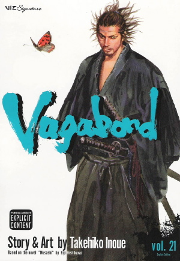
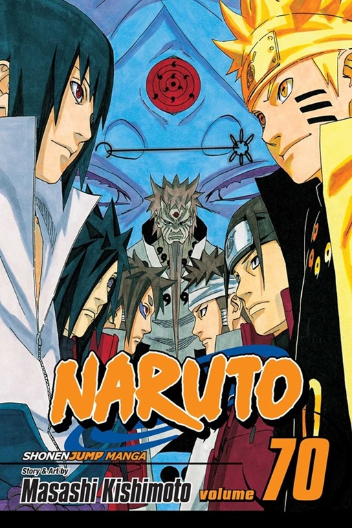
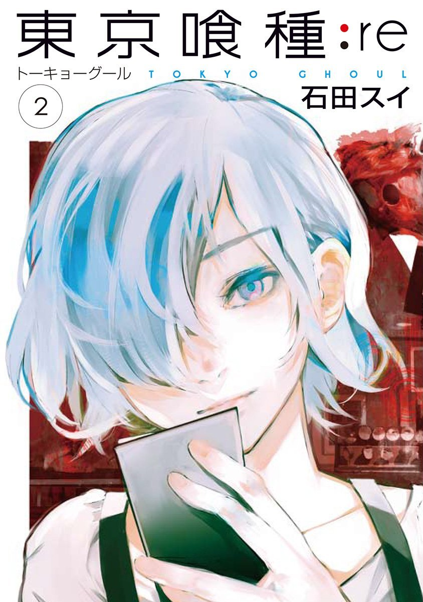
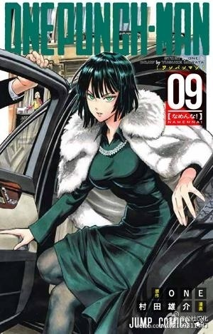
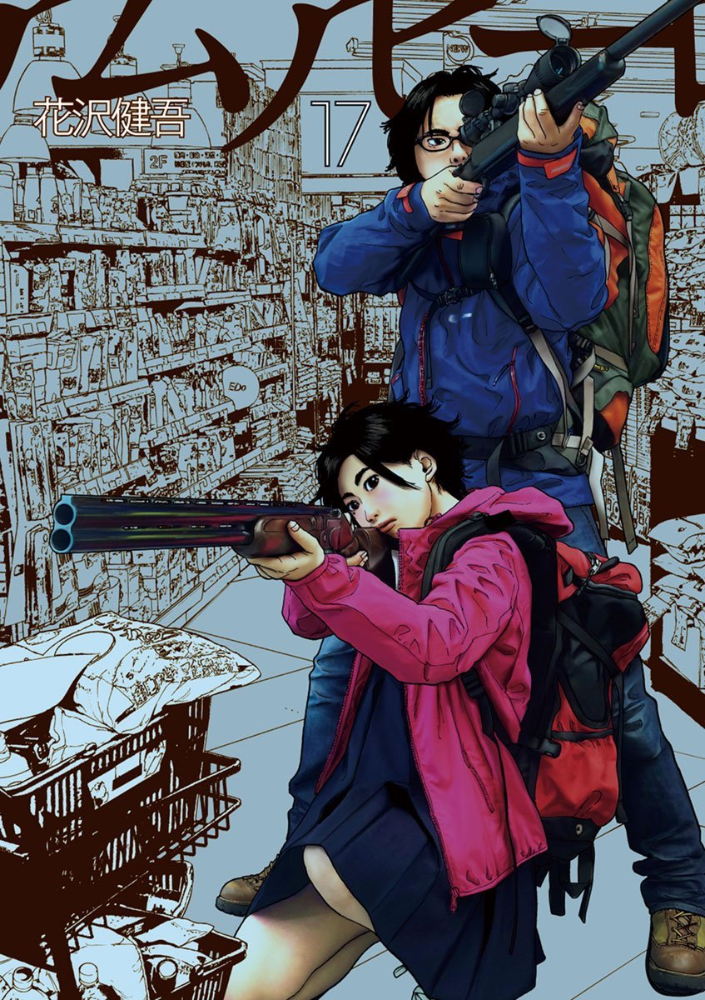
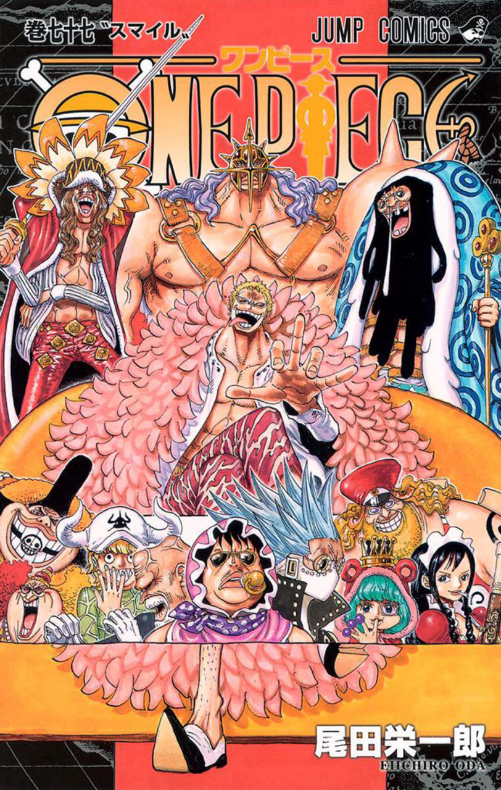
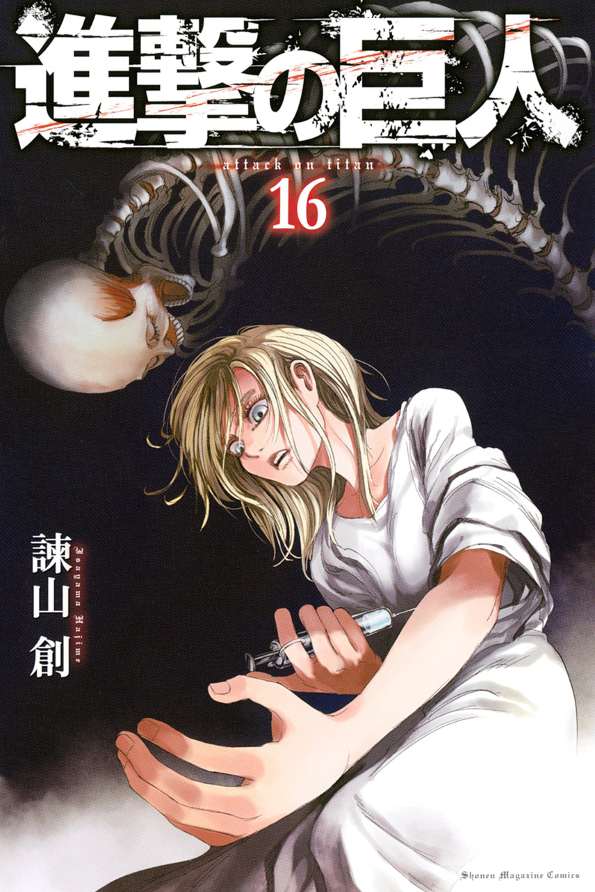
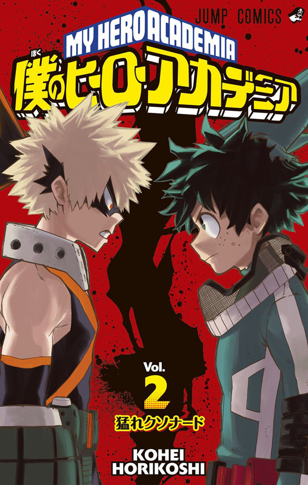
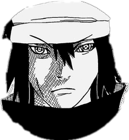

Vagabond is a Japanese manga series written and illustrated by Takehiko Inoue. It portrays a fictionalized account of the life of Japanese swordsman Miyamoto Musashi, based on Eiji Yoshikawa's novel Musashi.Growing up in the late 16th century Sengoku era Japan, Shinmen Takezo is shunned by the local villagers as a devil child due to his wild and violent nature. Running away from home with a fellow boy at age 17, Takezo joins the Toyotomi army to fight the Tokugawa clan at the Battle of Sekigahara. However, the Tokugawa win a crushing victory, leading to nearly three hundred years of Shogunate rule. Takezo and his friend manage to survive the battle and afterwards swear to do great things with their lives.
Naruto is a Japanese manga series written and illustrated by Masashi Kishimoto. Twelve years before the start of the series, the Nine-Tails attacked Konohagakure destroying much of the village and taking many lives. The leader of the village, the Fourth Hokage sacrificed his life to seal the Nine-Tails into a newborn, Naruto Uzumaki. Orphaned by the attack, Naruto was shunned by the villagers, who out of fear and anger, viewed him as the Nine-Tails itself. Though the Third Hokage outlawed speaking about anything related to the Nine-Tails, the children taking their cues from their parents inherited the same animosity towards Naruto. In his thirst to be acknowledged, Naruto vowed he would one day become the greatest Hokage the village had ever seen.
Tokyo Ghoul and Tokyo Ghoul:re is a manga series by Sui Ishida. The story follows Ken Kaneki, a college student who barely survives a deadly encounter with Rize Kamishiro, his date who reveals herself as a ghoul, a human-like creature that hunts and devours human flesh, and is taken to the hospital in critical condition. After recovering, Kaneki discovers that somehow he underwent a surgery that transformed him into a half-ghoul by transferring some of Rize's organs into his body, as she died when she attacked him, and just like them, he must consume human flesh to survive as well. With no one else to turn to, he is taken in by the ghouls who manage the coffee shop "Anteiku", who teach him to deal with his new life as a half-human/half-ghoul. The sequel series Tokyo Ghoul:re follows an amnesiac Kaneki under the new identity of Haise Sasaki.
One-Punch Man is an ongoing Japanese webcomic created by an author using the pseudonym ONE. The story takes place in the fictional Japanese metropolis of City Z. The world is full of strange monsters that mysteriously appear and cause disasters. Saitama, the protagonist, is an exceptionally powerful hero who easily defeats the monsters or other villains with a single punch. However, due to his overwhelming strength, Saitama has become bored with his powers and is constantly trying to find stronger opponents who can fight him. On his adventures, he meets new friends, enemies, and his own disciple, the cyborg Genos, and joins the Heroes Association in order to gain fame for all of his efforts to defeat evil. Despite defeating many strong monsters that even the Heroes Association's top members are unable to defeat, Saitama struggles to gain respect.
I Am A Hero is a Japanese horror manga by Kengo Hanazawa. The story begins with Hideo Suzuki, a 35-year-old manga artist assistant, whose life seem to be stuck around his exhausting but low-paying job, unfulfilled dreams, strange hallucinations and unsatisfying relationships. He sees himself as a supporting character in his own life, has low self-esteem, resulting in frustration. One day, the world as Hideo knows it is shattered by presences of a disease that turns people into homicidal maniacs, whose first instinct is to attack and devour the nearest human. Armed with only his sporting shotgun, he runs for his life, meeting strangers along the way. All the while, he and his companions struggle to stay alive, while questioning their moral choices.
One Piece is a pirate adventure manga written and drawn by Eiichiro Oda, created in July 1997. The current story takes place 800 years after the Great Kingdom fall and the World Government takes over the world stage, 22 years after Gol D. Roger the Pirate King was executed and inspires the Golden Pirate Age. After his death, countless of Pirates sets out to find his greatest treasure One Piece. Initially the story begins before the Battle of Marineford. A boy name Monkey D. Luffy from East Blue who was aged seven was inspired by the pirate Shanks who turns out to be the Cabin Boy of Gol D. Roger and during this time he accidentally ate the Gomu Gomu no Mi. He yearns to become the Pirate King. Ten years later he sets out from Foosha Village and during his adventures gathers a crew and faces many challenging trials in his path.
Attack On Titan is a manga series written and illustrated by Hajime Isayama. It was first published in 2009. The series follows the story of Eren Yeager, his adopted sister Mikasa Ackerman, and their friend Armin Arlert. After the outermost Wall is breached by Titans, including the 60-meter tall skinless Colossal Titan and the abnormally intelligent Armored Titan and his mother dying in the resulting destruction, Eren vows revenge against the Titans and later enlists in the military, accompanied by both Mikasa and Armin. Years later during his first battle against the Titans, Eren discovers that he has the ability to transform into a Titan at will. Seen as a threat to mankind by some and as a ray of hope by others, Eren joins his companions in a desperate fight to protect what remains of their society.
My Hero Academia is an ongoing Japanese super hero manga series written and illustrated by Kohei Horikoshi. Izuku Midoriya was just a regular middle school student in a world where people with superpowers known as "Quirks" are the norm.It has been serialized in Weekly Shōnen Jump since July 2014, and 6 volumes have been collected in tankōbon format However, he dreams of one day becoming a Hero, despite being bullied by his classmates for not having a Quirk. After being the only one to try and save his childhood friend, Katsuki, from a Villain, All Might, the world's greatest Hero, bestows upon him his own quirk, "One For All". The story follows Izuku's entrance into U.A. High School, a school that cultivates the next generation of Heroes.
